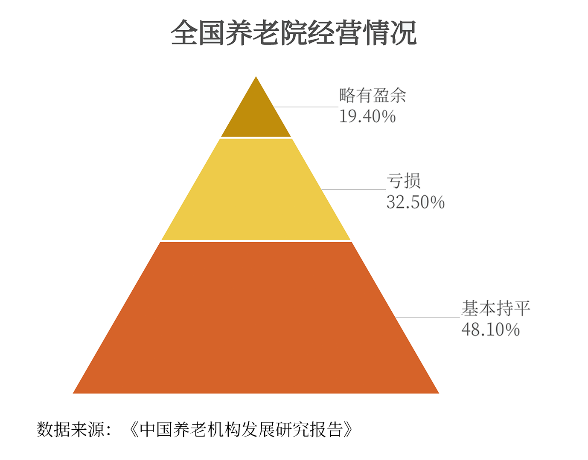
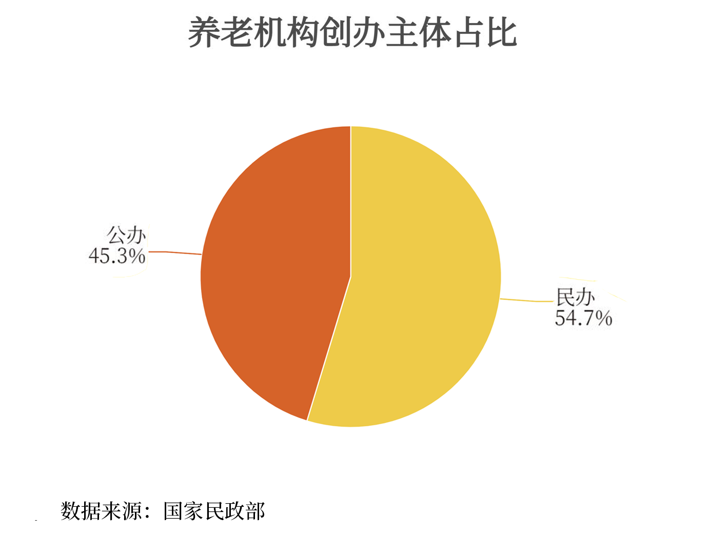
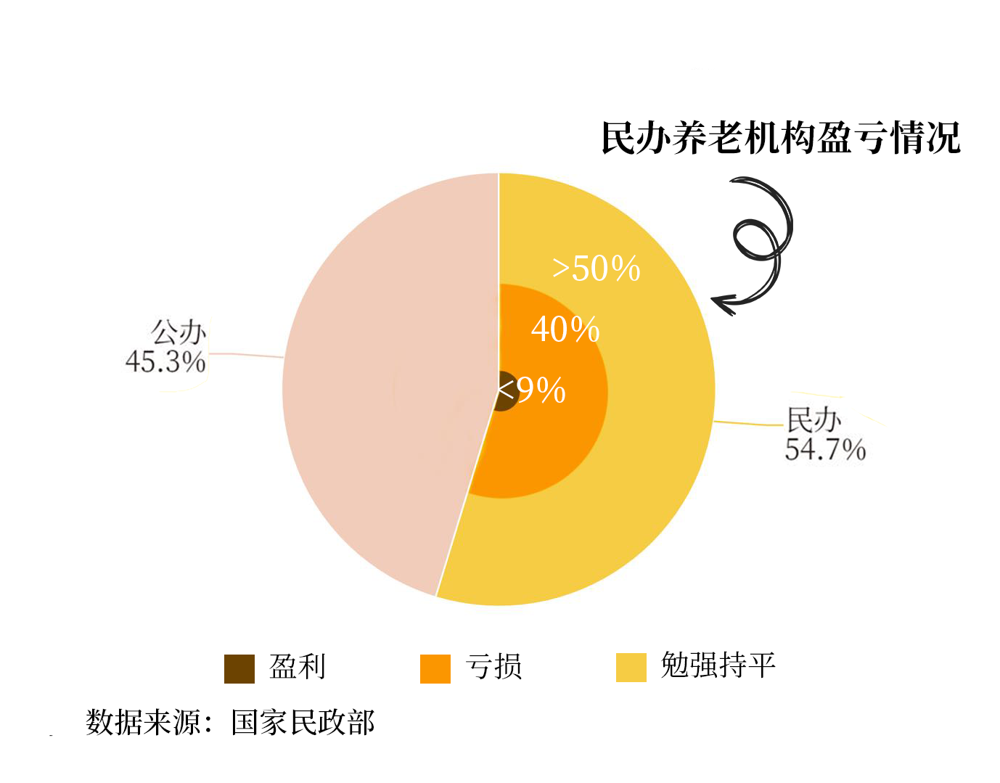
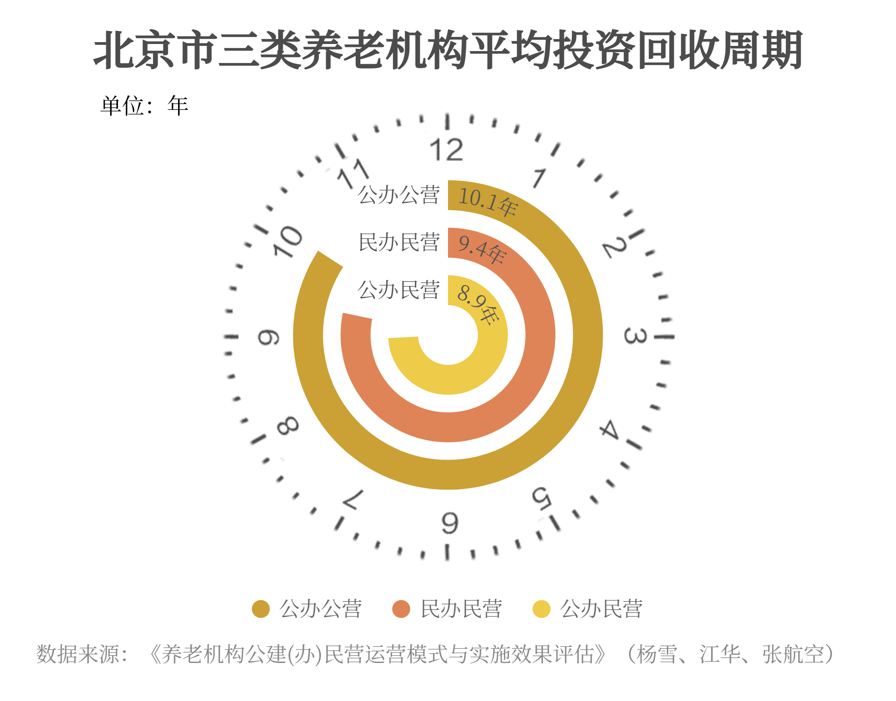
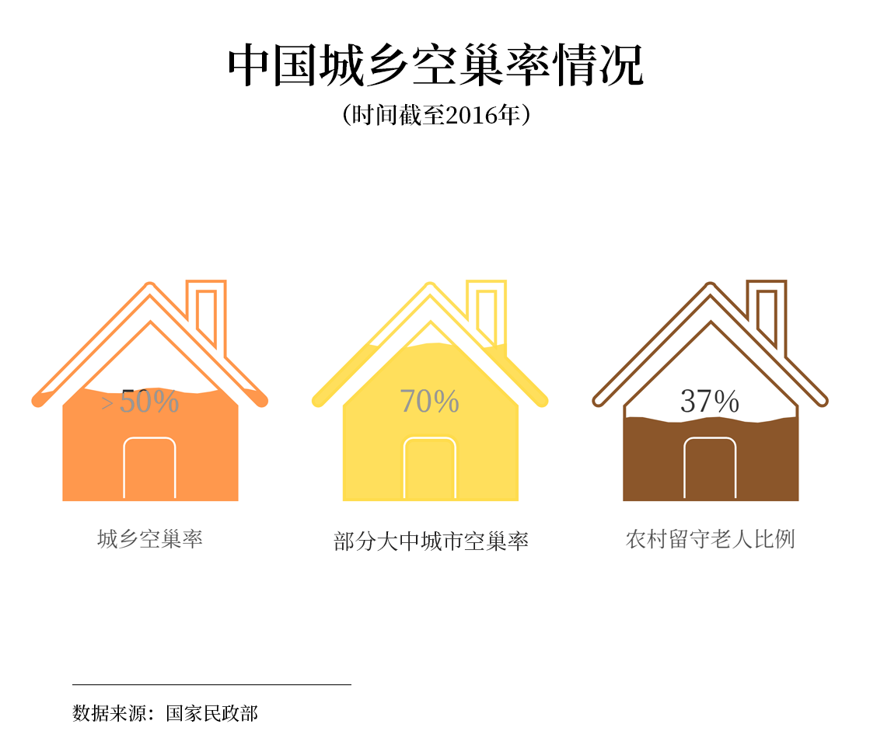
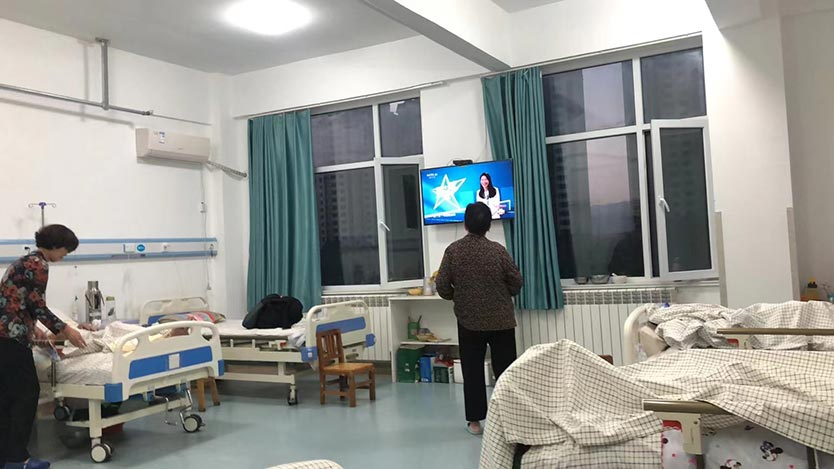
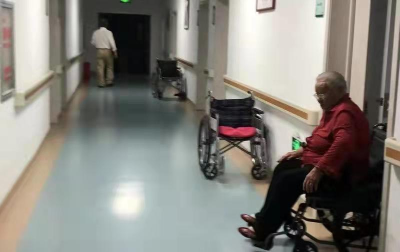
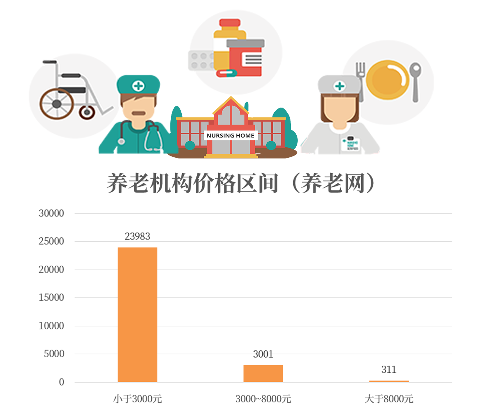

近年来，养老院“爆雷”事件频繁出现。
一些陷入非法集资的养老院向老人预售床位，却最终无法兑现分红，无法归还本金，也无法再提供养老服务，使得众多老人失去了大量积蓄。
2017年，湖南永州市老年公寓爆雷，老人家属在网上求助；
2018年，上海大爱城项目爆雷，涉案金额高达5.2亿，2000名老人遭受损失；
2018年，上海康乐福养老院，涉嫌非法吸收公众存款；
2019年，湖南爱之心因涉嫌非法吸收公众存款被警方立案调查；
2020年4月，江西中华情老年公寓爆雷。
2021年1月19日，湖南益阳，62岁的曹荣林，从资江一桥纵身一跃，坠入冰冷的江水中，再一次引发了社会对养老金融产品“爆雷”的关注。
2021年9月9日至16日，涉案金额逾8亿元的长沙爱之心养老公寓非法吸收公众存款案开庭审理。
每一次养老院的“爆雷”，都有无数老人多年攒下的心血付之东流。
不知道该不该住进养老院的老人感到无奈，养老院的经营者们也很无奈。
共同的无奈之下，是双向的远离。
养老院爆雷的背后：民办养老院经营困境

-
多家养老院“爆雷”的背后，除了非法集资，暴露出的是民办养老院经营不善带来的风险。
根据中国老龄科学研究中心2015年发布的《中国养老机构发展研究报告》，我国仅19.4%的养老机构略有盈利。
- 
-
养老院虽秉持非盈利性质，旨在为老人提供养老服务，但是养老院要维持经营还需足够的资金。尤其对于民营养老院而言，尽管有政策补贴，但面对长投资周期，营利微薄的现状，继续做下去仍然很困难。
这是横亘在所有民营养老院经营者面前的难题：想做没有钱，做了难赚钱。
在我国，民营养老院的占比数量过半。对于大部分民营养老院而言，自身的投资和经营所得都是主要的资金来源。
-
 
-
（鼠标悬浮查看养老院经营状况）
但养老院的经营情况并不乐观，根据民政部的数据，大于一半的养老院都处于勉强持平的状态，只有低于9%的养老院仍在“挣扎”着盈利。
“纯私人的养老院确实需要盈利，但是不能只具有盈利属性，这样很难照顾好老人。”河南省洛阳市孟津区康怡老年公寓（私营）的办公室主任杨红月表示，“还是要在照顾好老人的前提下融入市场经济吧。”
养老机构的服务宗旨是安排、照料、护理好老人，让老年人满意、子女亲属放心，为政府和社会分忧。
绝不能只追求经济利益,而不顾老人的安危、冷暖和利益,这样的机构将会招致社会舆论的谴责和政府的制裁。
我国《老年人社会福利机构基本规范》（2001）要求各养老机构在建院之初都必须明确其服务宗旨，并严格按照所设定的服务宗旨开展养老服务工作。
但对于民营养老院而言，提升服务质量意味着成本的提升，如若入住率无法相应提升，经营就会陷入困境；
而公营养老院却常常面临人满为患、服务质量下降的局面。
是什么因素使得民营养老院的运营出现困难？
1.投资回收周期长
权栓计在河南洛阳独资开办了长乐老年公寓，谈及养老院的资金流转，权院长表示，自己的养老公寓目前已经运营了好几年，但还是 没有收回成本。
“养老院的资金的流转很简单，投入就是个人独资投进去的钱，收入就是老人住进来每个月交的钱，开销主要是护工工资、设施维护 与维修、餐饮服务这些日常开销。”问及养老院的资金链时，权院长将其说的很单一。
但是收入的单一性也使得成本的回收周期被拉长。
“养老院这个行业就是这样，收回成本特别慢，也特别难。”权院长的无奈，是万千养老院院长的缩影。
在养老院投资回报周期较长的情况下，经营不善成为养老院面临的普遍问题。
去除民办公助，需要借营利持续运营的三类养老机构为公办公营、公办民营和民办民营。
经《社会保障研究》2021年的最新调查，其投资回收周期都接近十年。而在这十年中，还需要维持经营。
养老院的难以营利，不仅在于投资回收周期长，也在于入住率无法提升。
2.入住率低
“我认识一些做养老院的同行，平常也会有一些交流。很多养老院办不下去的都是因为来住的老人太少了。”权院长表示，入住率对于养老机构的发展很重要。
截至2020年7月底，我国已建养老机构床位429.1万张，收住老年人却只有214.6万人，养老床位空置率高达50%。

对比老年人群体总数来说，养老院提供的床位数量远不能满足老年人群体的养老需求，但是于此同时，老年人对养老院的热情也不见高涨。
养老院一方和老年人一方没有形成的积极的共识，背后的原因值得我们探讨。
投资汇报周期长给全国所有养老院都带来了经营不善的风险。一旦入住率无法相应提升，养老院便只能在服务质量上压缩成本，最终导致其服务质量下降，又使得更多人不愿意入住养老院。
恶性循环由此产生。
问题紧迫：老龄化趋势下，对护理型养老需求增加

民办养老院经营暴露出来的问题，在老龄化和空巢化的趋势下，显得格外紧迫。
1.人口老龄化趋势加深
从1964年到2020年6次人口普查数据来看，我国人口老龄化进程不断加速，“银发潮”来临。2020年全国第七次人口普查数据显示，我国60岁以上老年人口占全部人口比重的 13.5%，
比2010年增加4.63%，数据表明中国已属于轻度老龄化的状态。
2.家庭空巢化，养老院、人工护理需求增加
随着人口老龄化的不断深入，社会养老需求也持续增加。虽然目前我国96%的老人都选择居家养老为主的传统养老模式，但在生活节奏加快、人口迁移流动频繁的当下,家庭结构呈现空巢化。民政部2016年的数据显示，目前中国城乡空巢家庭超过50%，部分大中城市达到70%，其中农村留守老年人口约4000万人，占农村老年人口的37%。
在老人独居的家庭中，传统养老模式面临挑战。
并且，一旦老人陷入失能状态，居家养老便显得更加困难。河南省洛阳市孟津区康怡老年公寓一位老人的儿子王先生便是在这种情况下做了将老人送往养老院的选择。由于老人偏瘫，平时上下楼不方便，与人交流也少，相比之下，养老院的环境更好，也有人照顾。
苏海滨的父亲现住在河南省焦作市的益禾养老院中，苏海滨表示老人选择住养老院实为无奈之举,虽然老人有三个孩子，但三个人都是做生意，哪怕到了退休年龄也仍是工作状态，完全没时间照顾生活已经无法自理的老人。送老人去养老院成了他们唯一的选择。
 （图片来源：河南省焦作市益禾养老院）相比居家养老需要完全由家庭成员负责老年人从经济赡养、精神关爱到起居照护的全过程，养老机构及人工护理在一定程度上弥补了家庭结构缺失或家庭成员时间和精力不足的问题。
在老龄化趋势加重的情况下，却有大量老人或老人的家人不愿意选择养老机构作为养老方式。背后原因何在？
老人为何不愿意入住养老院？
1. 护理岗位人员少，护理服务质量堪忧
护理人员作为养老院养老模式的中坚力量，也出现了紧缺告急的状况。
我国当下失能半失能人员约3500万，假设3个老人需要一个护理员，那国内市场应需1000多万养老服务人员。而我国养老机构人员从业者不到100万，持证上岗的人数不足2万。
从国际标准上来说，照顾失能老人所需要的护理人员比例应是2：1，即2个护理人员照顾1个老人，但国内目前情况是平均一个护士负责10个老人。
目前国内老年护理专业人才缺口在千万名以上，尤其是针对失能、失智老人的专业护理员，更是稀缺。
“我所在的养老院条件已经很不错了，但是有时候还是觉得人手不够。”张阿姨是河南省洛阳市孟津区康怡老年公寓的全职护工，她一个人负责两个房间四个老人，时常觉得力不从心。
在她照顾的老人中，有一位是半身不遂，行走都需要轮椅，有时得抬着他。而当在忙这一位老人的时候，其他老人可能又有需要。
张阿姨时常需要面对这种“紧张”的情况。
 （图片来源：河南省焦作市益禾养老院）对于护理问题的担忧也是很多老人选择养老院时却步的原因所在。
因为家人无法提供应有的陪伴，老人一个人在家本就孤单。但是想到养老院的护工都是陌生人，如果每个护工又很忙，老人得不到心理上的照顾，可能会更加孤单。
2. 不同养老机构地区、价格差异
各地养老市场普遍面临供给与需求不匹配的结构性失衡，“一床难求”与床位闲置同时并存。
从养老机构床位区域结构来看，大部分的养老资源倾向经济较为发达的华中及华东地区，养老产业存在资源分布不均的问题。
公共投入多的城市养老院门庭若市，条件差、位置偏的养老院无人问津。
我国养老机构包含公办养老院、一般商业养老院和高级商业养老院。
公办养老院价格便宜，每月平均3000元以下，同时也导致床位吃紧，许多老人想住住不进，“十年等不到一张床”；而一些高档民办养老机构，每月8000元以上，但并非普通中产阶级家庭可以承担，其入住率仅为30%左右。
3.难以负担？
当问起为何不愿意选择养老院时，陕西省的张先生表示，印象中养老院都很贵，在老人还具备自理能力的情况下，他和家人都不会考虑将老人送去养老院。
可是养老院真的都很贵吗？
在目前中国最大的养老机构信息平台上，我们爬取了27296家养老院的数据，并计算出养老院的均价。
多数养老院是价格分级制，和河南省洛阳市孟津区康怡老年公寓类似，不同的护理需求会对应不同的价格。但月均价小于3000元的养老院仍占多数。
只不过对于老人而言，不同的护理、医药、饮食需求可能会带来额外的开销，使得对于中产阶级及以下的家庭而言，他们印象中的养老院是“无法负担”的。
地区、价格的分配不均，加上人们的对养老院的固有印象，使得在老龄化趋势加剧的情况下，需求虽然上涨，但养老院入住率却始终无法提高。
发展养老机构护理型床位以响应需求
从2011年开始，国家的政策就在不断推进养老机构的发展。从一开始的支持到后来逐渐增多的规范，
养老机构的发展也逐渐明朗起来，使得更多个人、团体对其进行投资。
我国目前对养老机构存在硬性需求的多为失能老人，因此对护理型床位的需求为主要需求。
根据《“十四五”规划和2035远景目标纲要》，至2025年，全国养老机构护理型床位占比要提高到55%，
对此全国各省市也陆续提出了发展目标。
“护理型床位”成为政策的聚焦点。当最紧要群体的需求被满足，相信人们对于养老院的态度也会有所改观。